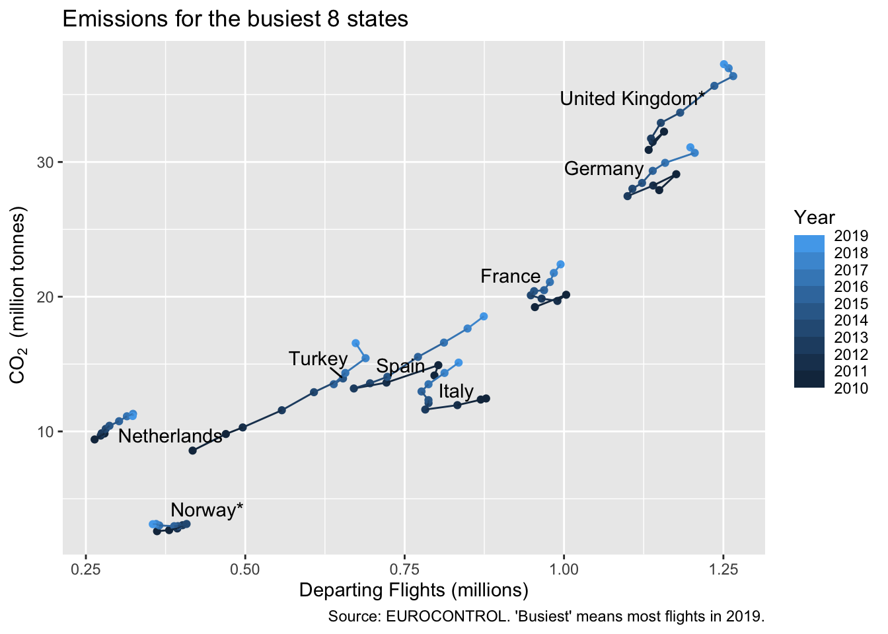

Chapter 6 Extended Exercises - Emissions Graphs
In chapters 3 to 5 we’ve covered some basics of the R language, seen through the process of building graphs of some emissions data. Before moving on to new concepts, you might like to try some extended exercises.
These do not introduce any new functions, but they might use new parameters for functions that you’ve already seen. So a good place to start if you’re stuck is the help file for the functions that you know about. If that doesn’t work, then there are some hints in chapter 6.2, deliberately placed slightly separate from the questions!
This book also has a search function, for finding your way back to relevant sections - see the magnifying glass top left. Up and down arrows move from one find to the next.
It’s good practice to periodically ‘clean’ your environment, that is, to remove all the data saved in it. This is essential before testing, because you often find that you’re relying on something that has been changed as you tweak and improve the code. Click the broom icon in the environment pane before you start the exercises.
6.1 Questions
- Starting from the final graph in chapter 4.5, move the label to 2015 and set the colour of the label to black.
- Building on (1) plot the 6 states with fewest flights in 2010, but which had more than 10,000 flights . There’s a bit of overlap, so use a different shape for each one.
- (Harder) Plot the monthly emissions for France from 2015 onwards as a bar chart. We haven’t done dates yet, so use a character string.
6.2 Hints
- If you’re starting from a ‘clean’ environment, you will need to load the data and re-create
top_states. Search in this book forload(andtop_states. - Mostly a question of filtering. Don’t forget to check the text of your graph when it’s done. The help for
geom_pointlists which aesthetics are understood, so will help you find the parameter name for changing shape (in this case, it’s the obvious answer). - You need to go back to the code that loads the original excel file. You’ll need to
mutateto create a new variable combining two stringsstr_c(orpaste), but you need to put this inside anif elseto treat 10-12 different to the other months, or the text won’t sort correctly. Remember what we did to the bar charts when there was long text on the x-axis? In the end, it’s an ugly chart but let’s not worry too much about that.
6.3 Answers
- This exercise is really a lesson in assembling the code into one sequence - it gets a bit broken up in the book. You should probably include your
library(tidyverse)statement at the top, for really complete code.
Notice that we have two colour aesthetics: the default one which is by YEAR and one specifically for the geom_text_repel.
The other catch is that, because the colour of the text is constant, it appears outside the aes(), not inside.
# load the dataset
load("data/annual_co2.rda")
top_states <- annual_co2 %>%
filter(YEAR == 2019) %>% # top in year 2019
slice_max(TF, n = 8) %>% # top 8
pull(STATE_NAME)
annual_co2 <- annual_co2 %>%
mutate(state_label = if_else(YEAR == 2015, str_to_title(STATE_NAME), ""))
ggplot(annual_co2 %>%
filter(STATE_NAME %in% top_states),
aes(TF/1e6, CO2_QTY_TONNES/1e6,
colour = YEAR, group = STATE_NAME)) +
geom_point() +
geom_path() +
ggrepel::geom_text_repel(aes(label = state_label), colour = "black") +
scale_colour_steps(n.breaks = 8, show.limits = TRUE) +
labs(x = "Departing Flights (millions)",
y = bquote(~CO[2]~" (million tonnes)"),
colour = "Year",
title = "Emissions for the busiest 8 states",
caption = "Source: EUROCONTROL. 'Busiest' means most flights in 2019.")
- This is an exercise in logic in the
filter. Did you remember to update the title, footnotes and the legend title?
# load the dataset
load("data/annual_co2.rda")
selected_states <- annual_co2 %>%
filter(YEAR == 2010 & TF > 10000) %>% # more than 10k flights
slice_min(TF, n = 6) %>% # bottom 6
pull(STATE_NAME)
annual_co2 <- annual_co2 %>%
mutate(state_label = if_else(YEAR == 2015, str_to_title(STATE_NAME), ""))
ggplot(annual_co2 %>%
filter(STATE_NAME %in% selected_states),
aes(TF/1e6, CO2_QTY_TONNES/1e6,
colour = YEAR, group = STATE_NAME)) +
geom_point(aes(shape = STATE_NAME)) +
geom_path() +
ggrepel::geom_text_repel(aes(label = state_label), colour = "black") +
scale_colour_steps(n.breaks = 8, show.limits = TRUE) +
labs(x = "Departing Flights (millions)",
y = bquote(~CO[2]~" (million tonnes)"),
colour = "Year",
shape = "State",
title = "Emissions for the least-busy 6 states",
caption = "Source: EUROCONTROL. 'Least-busy' means fewest flights in 2010, but more than 10k flights.")
- You could load from Excel and immediately filter. I do it in two steps, because then I can check the correct field names for the
filterandmutateusing the environment pane.
This is an exercise in building up quite complex statements from simple functions. Formatting with line breaks should help a lot.
# go back to the excel file
aviation_co2 <- readxl::read_excel("data/CO2_emissions.xlsx",
sheet = "DATA")
# just the data that we need
monthly_co2 <- aviation_co2 %>%
filter(YEAR >= 2017 & STATE_NAME == "FRANCE") %>%
mutate(date = if_else(MONTH < 10,
str_c(YEAR, " ", MONTH),
str_c(YEAR, " ", MONTH))) #a pseudo-date
# then the basic ggplot(data, aes(x,y)) + geometry...
ggplot(monthly_co2, aes(date, CO2_QTY_TONNES/1e6)) +
geom_col() +
labs(x = "",
y = bquote(~CO[2]~" (million tonnes)"),
title = "Aviation Emissions of France",
caption = "Source: EUROCONTROL.") +
coord_flip()